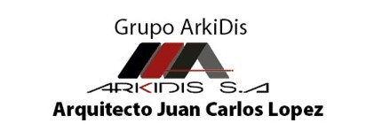

"Experiencia que respalda"
No ofrecemos opiniones generales; entregamos dictámenes y soluciones basados en un análisis técnico jurídico exhaustivo e interdisciplinario.
Agenda una ConsultaEn Iuris Consilium creemos que la aplicación de normas es una herramienta para proteger derechos, resolver conflictos y generar soluciones que impulsen el crecimiento de las personas y las organizaciones.
Somos un Consejo Jurídico de Expertas integrado por profesionales con amplia experiencia en distintas ramas del derecho, comprometidos con brindar asesoría estratégica, representación legal y acompañamiento integral, siempre con ética, excelencia y un profundo sentido de responsabilidad.
Brindar soluciones jurídicas integrales, estratégicas y personalizadas, defendiendo los intereses de nuestros clientes con excelencia, ética y compromiso.
Ser un consejo jurídico referente por su excelencia, solidez y confianza.
Soluciones integrales para sus necesidades legales
Fortalezca sus conocimientos, avance hacia su graduación, actualice su práctica profesional y transforme su experiencia en un proyecto propio con el acompañamiento especializado del Consejo Jurídico de Expertos – Iuris Consilium.
Comprenda con profundidad. Argumente con seguridad. Avance con confianza.
Transforme sus dudas en conocimientos sólidos mediante tutorías por materia de Ciencias Jurídicas y Sociales, adaptadas al programa de su universidad y a sus necesidades de aprendizaje.
Una formación personalizada para comprender instituciones jurídicas, relacionar conceptos y desarrollar criterio propio.
Su próxima etapa profesional comienza con una preparación sólida.
Prepárese para su examen técnico profesional por fase privada, pública o internacional, o refuerce las materias concretas que necesita dominar.
Si ya ejerce, profundice y actualice sus conocimientos mediante cursos de alta especialidad orientados a los desafíos de la práctica jurídica.
Cada curso se estructura conforme al programa de estudios de su universidad o a sus objetivos de actualización profesional.
Su experiencia tiene valor. Conviértala en su próximo proyecto.
Capitalice su trayectoria, sus conocimientos y su especialidad para construir una iniciativa propia con propósito y una ruta de acción clara.
En Iuris Consilium le acompañamos a identificar oportunidades, definir su propuesta de valor y estructurar su proyecto, considerando los cambios tecnológicos, profesionales y sociales que están transformando nuestro entorno.
Ya sea una nueva línea de servicios, un emprendimiento profesional o una iniciativa académica o social, reciba asesoría y mentoría para pasar de la idea a un proyecto estructurado, evaluar su viabilidad y planificar su puesta en marcha.
Alcance del acompañamiento:Horarios, condiciones y metodología para los servicios de formación jurídica
Atención individual o en grupos reducidos de hasta 8 participantes por curso para una atención personalizada.
Modalidad presencial o híbrida, adaptándose con total flexibilidad a su disponibilidad y ritmo.
Contenidos adaptados a los programas de estudio vigentes de las universidades del país.
Dos sesiones semanales de tres horas cada una, o una programación previamente acordada con los participantes.
Cuéntenos su universidad, la materia o fase que desea preparar y su disponibilidad. Diseñemos una ruta de formación para sus objetivos.
Abogada y Notaria | Doctora en Derecho del Trabajo, Previsión Social y Derechos Humanos; y Maestría en Propiedad Intelectual
Abogada y Notaria | Magíster en Derecho de las Mujeres, Género y Acceso a la Justicia
Abogada y Notaria | Magíster en Derecho Procesal Constitucional
Abogada y Notaria; y Magíster en Derecho Procesal Civil y Mercantil

Responsabilidad Social
Como parte de nuestro compromiso con la justicia y la sociedad, destinamos tiempo profesional a brindar asesoría jurídica especial a personas de escasos recursos y en situación de vulnerabilidad. Nuestra responsabilidad social traduce la excelencia jurídica en acciones concretas que promueven acceso a la justicia, dignidad, equidad y solidaridad.